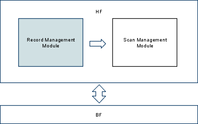

Πληροφορική & Τηλεπικοινωνίες K25
Ανάπτυξη Λογισμικού
Χειμερινό Εξάμηνο 2009-10
Καθηγητής Γιάννης Ιωαννίδης
Μέρος 2ο, 1/2: Μονάδα διαχείρισης εγγραφών
(Ημερομηνία Παράδοσης: Τρίτη, 1/12/2009, 17:00)

Μονάδα διαχείρισης εγγραφών (Record Management Module)
Εισαγωγή
Η μονάδα διαχείρισης εγγραφών αποτελεί
τμήμα του επιπέδου διαχείρισης αρχείων σωρού (Heap Files). Γενικά, το
επίπεδο των αρχείων σωρού βρίσκεται πάνω από αυτό της διαχείρισης μπλοκ
αρχείων (BF). Για το λόγο αυτό θα χρησιμοποιείται την διεπαφή του έχετε
ήδη υλοποιήσει στο BF επίπεδο προκειμένου να έχετε πρόσβαση σε αρχεία
του δίσκου, όπως φαίνεται και στο αντίστοιχο σχήμα.
Κάθε αρχείο σωρού περιέχει εγγραφές και το συγκεκριμένο τμήμα (RMM)
είναι υπεύθυνο για τη διαχείρισή τους. Συγκεκριμένα, το RMM
περιλαμβάνει συναρτήσεις που αφορούν την εισαγωγή, διαγραφή και
ανάκτηση συγκεκριμένων εγγραφών. Οι εγγραφές ενός αρχείου έχουν σταθερό
μέγεθος το οποίο δίνεται ως όρισμα στις συναρτήσεις τις οποίες καλείστε
να υλοποιήσετε.
Η εργασία αυτή είναι ομαδική. Η γλώσσα υλοποίησης είναι η C.
Ρουτίνες Υλοποίησης της μονάδας διαχείρισης σαρώσεων
int RMM_InsertRec()
int RMM_InsertRec(
int fileDesc, /* αριθμός που αντιστοιχεί σε ανοιχτό αρχείο */
char *record, /* δείκτης προς τα περιεχόμενα εγγραφής */
int recordSize /* μέγεθος κάθε εγγραφής του αρχείου */
)
Η ρουτίνα εισάγει την εγγραφή που δείχνει ο δείκτης record στο ανοιχτό αρχείο με αναγνωριστικό αριθμό fileDesc. Το μέγεθος της εγγραφής είναι recordSize. Η ρουτίνα επιστρέφει έναν μη αρνητικό ακέραιο ως το αναγνωριστικό εγγραφής (recId) το οποίο έχει ανατεθεί στη νεοεισελθούσα εγγραφή, αν η εισαγωγή είναι επιτυχής, ειδ' αλλοιώς έναν κωδικό σφάλματος.
int RMM_DeleteRec()
int RMM_DeleteRec(
int fileDesc, /* αναγνωριστικός αριθμός ανοιχτού αρχείου*/
int recId, /* αναγνωριστικός αριθμός εγγραφής */
int recordSize /* μέγεθος κάθε εγγραφής του αρχείου */
)
Η ρουτίνα διαγράφει την εγγραφή με αναγνωριστικό αριθμό recId,
από το ανοιχτό αρχείο με αναγνωριστικό fileDesc. Το μέγεθος της
εγγραφής είναι recordSize. Η ρουτίνα επιστρέφει HFE_OK αν η διαγραφή
έγινε επιτυχώς, διαφορετικά κάποιον αντίστοιχο κωδικό σφάλματος.
int RMM_GetFirstRec()
int RMM_GetFirstRec(
int fileDesc, /* αναγνωριστικός αριθμός ανοιχτού αρχείου */
char *record, /* ενδιάμεση μνήμη για την εγγραφή */
int recordSize /* μέγεθος της κάθε εγγραφής του αρχείου */
)
Η ρουτίνα αυτή διαβάζει στην ενδιάμεση μνήμη record την
εγγραφή που αντιστοιχεί στην πρώτη διαθέσιμη και προέρχεται από το
ανοιχτό αρχείο με αναγνωριστικό αριθμό fileDesc. Κάθε εγγραφή στο
αρχείο έχει μέγεθος recordSize. Επιστρέφει HFE_OK αν η εγγραφή
ανακτήθηκε επιτυχώς ή τον αντίστοιχο κωδικό σφάλματος.
int RMM_GetNextRec()
int RMM_GetNextRec(
int fileDesc, /* αναγνωριστικός αριθμός ανοιχτού αρχείου */
int recId, /* αναγνωριστικό της εγγραφής μετά την οποία ξεκινά η αναζήτηση */
char *record, /* ενδιάμεση μνήμη για την εγγραφή */
int recordSize /* μέγεθος της κάθε εγγραφής του αρχείου */
)
Η ρουτίνα αυτή διαβάζει από το ανοιχτό αρχείο με
αναγνωριστικό αριθμό fileDesc στην ενδιάμεση μνήμη record την πρώτη
έγκυρη εγγραφή που υπάρχει μετά από αυτήν με αναγνωριστικό αριθμό
recId. Το μέγεθος κάθε εγγραφής του αρχείου δίνεται από το recordSize.
Επιστρέφει HFE_OK αν η επόμενη εγγραφή ανακτήθηκε επιτυχώς ή αντίστοιχο
κωδικό σφάλματος. Για την εγγραφή recId δε γίνεται κανένας έλεγχος
εγκυρότητας.
int RMM_GetThisRec()
int RMM_GetThisRec(
int fileDesc, /* αναγνωριστικός αριθμός ανοιχτού αρχείου */
int recId, /* αναγνωριστικός αριθμός της εγγραφής που ζητήθηκε */
char* record, /* ενδιάμεση μνήμη για την εγγραφή */
int recordSize /* μέγεθος της κάθε εγγραφής του αρχείου */
)
Η ρουτίνα διαβάζει από το ανοιχτό αρχείο με αναγνωριστικό αριθμό
fileDesc την εγγραφή με αναγνωριστικό recId. Η εγγραφή αποθηκεύεται
στην ενδιάμεση μνήμη record. Το μέγεθος της κάθε εγγραφής του αρχείου
είναι recordSize. Επιστρέφει HFE_OK αν η εγγραφή ανακτήθηκε επιτυχώς ή
αντίστοιχο κωδικό σφάλματος.
Σχόλια για την Υλοποίηση
Κάθε αρχείο του επιπέδου Αρχείου Εγγραφών θα πρέπει να υλοποιηθεί
χρησιμοποιώντας τις ρουτίνες του επιπέδου Αρχείου Μπλοκ (BF) που έχετε
υλοποιήσει. (Αν δεν νιώθετε άνετα με την δική σας υλοποίηση θα σας
δώσουμε εμείς.) Κάθε αναγνωριστικό εγγραφής αναγνωρίζει μοναδικά μια
εγγραφή μέσα σε ένα αρχείο - αυτό θα χρησιμοποιηθεί και στα παραπάνω
επίπεδα του λογισμικού. Είναι απλά ένας ακέραιος ο οποίος συνδυάζει το
μπλοκ και τη θέση μέσα στο μπλοκ όπου βρίσκεται η εγγραφή. Εσείς θα
αποφασίσετε πώς να δομήσετε εσωτερικά κάθε μπλοκ (κεφαλίδα, εγγραφές,
πίνακα μπιτ, κτλ.), οπότε εσείς θα πρέπει να αποφασίσετε και για τη
μορφή του αναγνωριστικού εγγραφών.
Όταν εισάγετε μια καινούργια εγγραφή, να μην
σαρώνεται σειριακά όλο το αρχείο για να βρείτε μια άδεια θέση για να
βάλετε την εγγραφή. Φροντίστε να υλοποιήσετε κάτι πιό έξυπνο και
αποδοτικό.
Να επισημάνουμε και πάλι ότι τα παραπάνω είναι οδηγίες αλλά όχι
υποχρεωτικές. Εσείς μπορείτε να υλοποιήσετε τα πράγματα διαφορετικά αν
θέλετε. Οι διεπαφές των ρουτινών και η λειτουργικότητά τους είναι τα
μόνα πράγματα που δεν μπορείτε να αλλάξετε.
 Σχολιασμός, Έλεγχος Σφαλμάτων, και Γενική Μορφοποίηση
Σχολιασμός, Έλεγχος Σφαλμάτων, και Γενική Μορφοποίηση
Όπως πάντοτε, αναμένεται καλός σχολιασμός του προγράμματος, και
εσωτερικός (ανάμεσα στις γραμμές κώδικα) και εξωτερικός (στην αρχή κάθε
ρουτίνας). Ένας γενικός κανόνας είναι να σχολιάζετε τα προγράμματά σας
σαν να πρόκειται να τα δώσετε σε κάποιον άλλον ο οποίος θα τα
επεκτείνει και ο οποίος δεν έχει ιδέα για το τι κάνατε όταν τα γράφατε
(και δεν μπορεί ούτε να σας βρει να σας ρωτήσει).
Επίσης, θα πρέπει να ελέγχετε για διάφορα σφάλματα που μπορούν να
προκύψουν και να βεβαιωθείτε ότι ο κώδικάς σας τερματίζει ομαλά, με
μηνύματα που έχουν νόημα, σε όλες τις εισόδους που ικανοποιούν την
παραπάνω περιγραφή.
Διαδικαστικές Λεπτομέρειες
Το τί ακριβώς θα παραδώσετε, πού θα βρείτε τα αρχεία με τα οποία
θα ελέγξετε τελικά το πρόγραμμά σας, κτλ., θα ανακοινωθεί σύντομα.
Τα προγράμματά σας θα πρέπει να δουλεύουν στα μηχανήματα του
τμήματος (είτε στα sun (Linux) είτε στα pc (Windows)) ώστε να μπορούν
να ελεγχθούν. Ακόμη και αν δουλέψετε σε δικούς σας υπολογιστές θα
πρέπει να βεβαιωθείτε ότι το τελικό αποτέλεσμα δουλεύει και εδώ τοπικά.
Η έκδοση της C που θα χρησιμοποιήσετε πρέπει να έχει ακέραιους των 4
bytes και να επιτρέπει αλλαγή ερμηνείας τύπου δεδομένων (type casting).